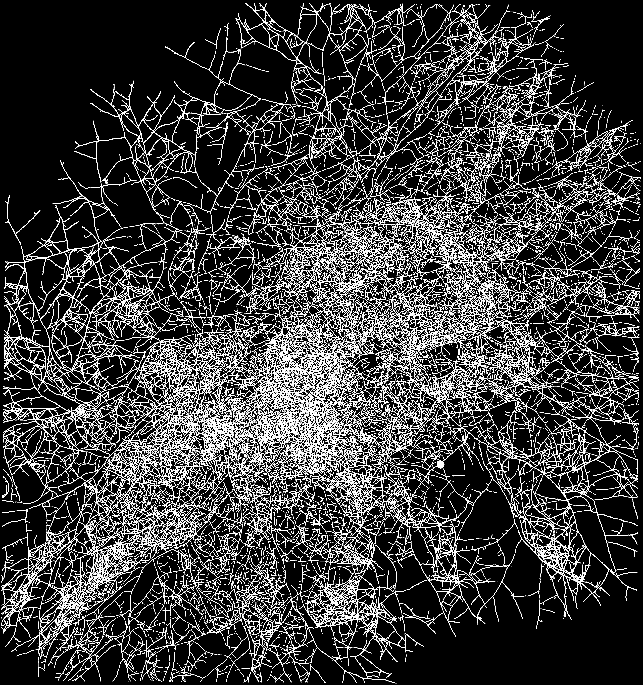
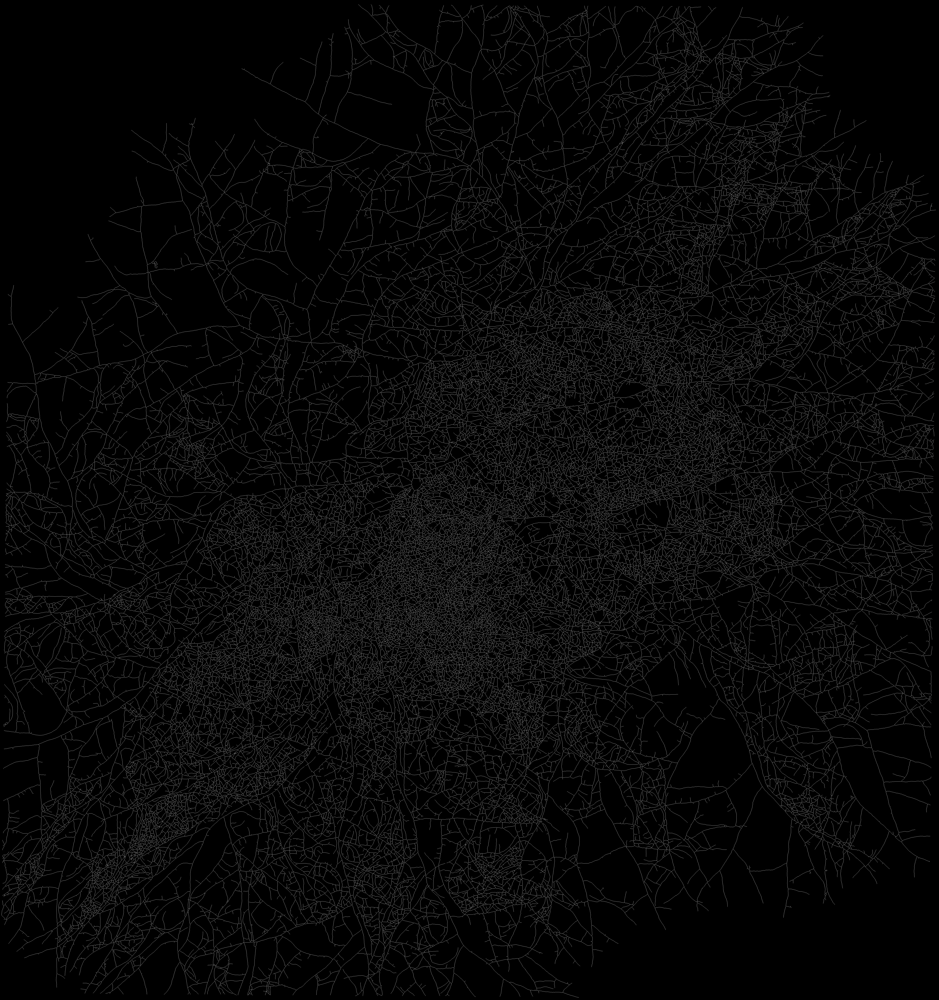

SkelHypha¶
SkelHypha est un script distribué sous licence GPL v3 permettant de squelettiser un ensemble d’images de réseaux mycéliens complexes. Il s’applique sur des images binarisées au format tif et fournit les images nécessaires à l’application TrackHypha.

Image binarisée d’un mycélium de Podospora anserina.

Image squelettisée via SkelHypha de l’image précédente. Le squelette faisant un pixel de large, il est nécessaire d’ouvrir l’image dans un ouvel onglet puis de la mettre en taille réelle afin de voir correctement le squelette.
Bien que conçu spécifiquement pour les réseaux mycéliens, ce script peut également être utilisé sur d’autres réseaux complexes lorsque les outils de squelettisation standards ne fonctionnent pas.